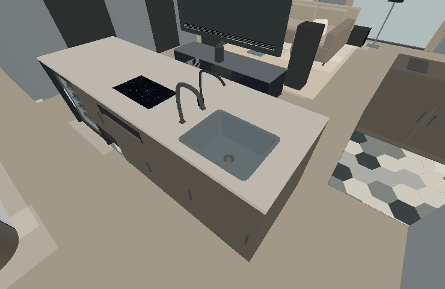
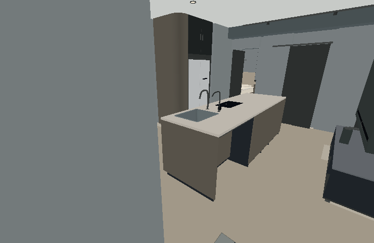
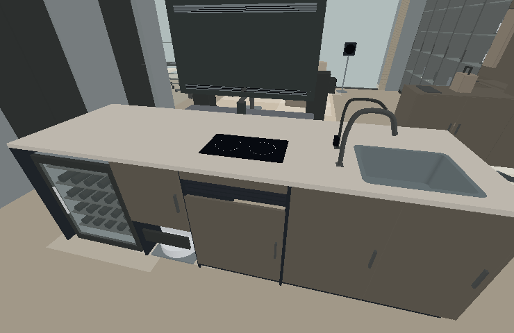
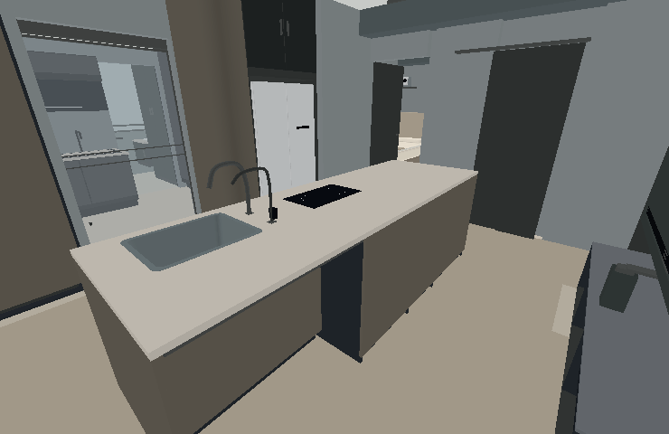
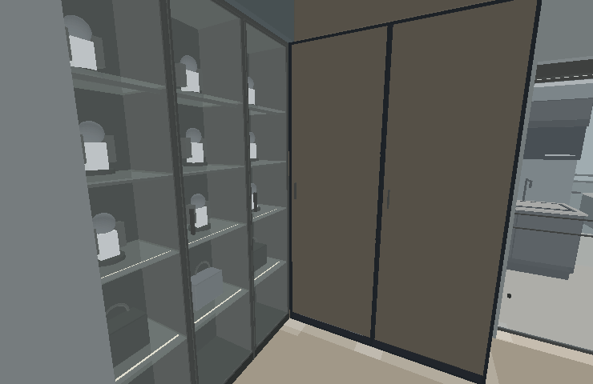
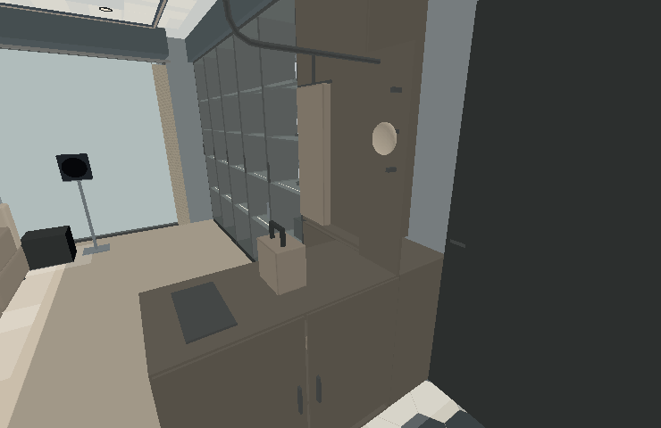
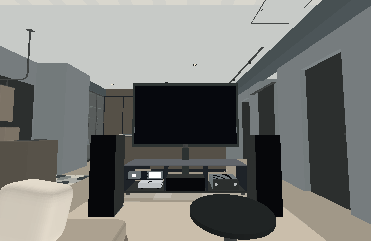

加大的備餐單槽

薄邊與中空內膽，槽底排水口保持開孔；備餐與CLAR飲水龍頭分開。飲水機在濕區北側，避開水槽和排水。
已將大中島、展示收納、玄關與影音配置做進同一份可操作模型。以下由實際模型網格產生，用來檢查比例、接口與視線；不含貼圖、反射及正式光照，實際材質請開啟 3D。
9/11修正：步行時平面圖恢復顯示；V3備餐槽加大，補齊濕區底板、門縫、檯下支撐及展示櫃上方缺口，並校正鞋子與衣架的接觸位置。

薄邊與中空內膽，槽底排水口保持開孔；備餐與CLAR飲水龍頭分開。飲水機在濕區北側，避開水槽和排水。

結構柱保留；看向95cm寬的完整木皮端面，電視側邊仍可見。

酒櫃、掃地機、IH與飲水各自分艙，槽與爐面使用真正開孔。

深色直紋木皮連續；南段34×104cm留膝，一张活動椅可在設備控制開啟。

165×40玻璃櫃接155×60深收納；左端封閉轉角收齊，不留下窄地洞。

90cm矮櫃放包與鑰匙，側板帽鉤與接頂掛衣桿；保留獨立電箱維修門。

83吋旋轉電視、Q6中置入櫃、左右Q7對稱；Switch 2、PS5 Pro、擴大機可定位查看。
已比對 V1／V2 全部網格、位置與顏色保持原樣；V3 保留24個設備模型、13個導航區域。測試四條實際步行路線、門片完整開啟、電視180度旋轉範圍、6組窗簾、RGB及三版介面操作。四顆天花喇叭避開目前模型的樑與冷氣端末／檢修孔。
檢查以模型及離線程式為依據，未進行瀏覽器GPU與現場聲學測試。淨距依模型；結構、機電、酒櫃安裝及旋轉機構需依現場和原廠條件確認。AI頁面仍是更新前材質參考，V3改動區域不套用舊照片。